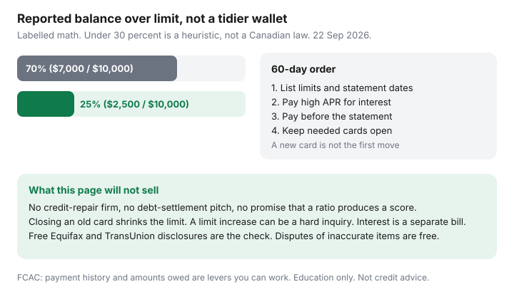

Personal Finance · Canada
Lower Credit Utilization in Canada Without Closing Cards You Need
Utilization is the balance that gets reported, divided by the limit on that card and across your revolving accounts. A labelled example from the free-report guide: $7,000 on $10,000 of limits is 70%. The same limits with $2,500 owing is 25%. “Stay under 30%” is a planning heuristic people repeat. It is not a Canadian statute, and paying a company to “repair” the ratio will not change the arithmetic. You lower it by owing less on the statement the bureaus receive, without closing the cards you still use. Date-stamped 22 Sep 2026.
How to read the file itself, and how to dispute an error yourself, is the free Equifax and TransUnion path. How to retire the balance that is charging interest is snowball versus avalanche. This page sits between them: the reporting habit, for 60 days, with the cards left open.
Disclosure: This page does not offer credit repair, debt settlement, credit-builder products, or new-card recommendations. Saving Optimizer is not paid to send you to a repair firm. Education only — not credit, lending, or insolvency advice. Scores are proprietary. A lower ratio is not a promise of a lower interest rate.
Key takeaways
- Payment history and amounts owed are the levers FCAC points households toward. Utilization is amounts owed divided by revolving limits. The often-quoted 30% line is a heuristic.
- Many issuers report the statement balance. Paying the reported balance down before the statement cuts the figure the bureau sees, even when you pay in full by the due date anyway.
- A limit increase can lower the ratio and can be a hard inquiry. A new card does the same, with a new temptation to spend. Neither is step one.
- Do not close the oldest card you still might need. Closing shrinks the denominator. An annual fee you refuse to pay is a money decision you make after the math, not before.
- Utilization and interest are different bills. Avalanche the high APR. Québec’s 5% minimum on credit-card payments, in force 1 August 2025, is a floor, not a payoff plan.
Why utilization matters for rates and approvals
The Financial Consumer Agency of Canada describes credit scores as a picture of how you have used credit, built from payment history and how much of your available credit you are using, among other factors the bureaus do not publish as a formula. Lenders and landlords who pull a file see balances and limits. A file that shows most of the limit in use, even if you pay the minimum on time, is a different file from one that shows the same cards nearly idle. Nobody on this site can tell you how many points a move from 70% to 25% is worth. The bureaus will not either. The controllable fact is the ratio.
Both per-card and overall ratios can matter, because a model can look at the maxed card separately from the tidy one. One card at $4,800 of a $5,000 limit is not “fine” because three empty cards pull the average down. List every revolving account: credit cards, lines of credit, and any overdraft that is actually a reported line. A chequing account is not utilization. A mortgage is instalment credit, not the revolving ratio this page is about. Buy-now-pay-later plans sometimes report and sometimes do not. If a plan appears on the free disclosure, include it. If it does not, do not invent a limit for it.
Order both free disclosures before you start the 60 days, using the phone numbers and online paths on the free-report guide (Equifax 1-800-465-7166, TransUnion 1-800-663-9980). Your own request does not change the score. You need the limits and balances the bureaus already hold, because your banking app and the bureau can disagree for a month.
Pay-before-statement tactics that cut reported balances
The due date is when interest and late marks are decided. The statement date is often when the balance is sent to the bureau. They are not the same day. If you pay the card down to the target a few days before the statement, the reported balance can be the lower number, and you still pay whatever remains by the due date so the account stays current. Confirm the statement date in the app. Set the payment two or three business days earlier so it posts.
A practical target for the 60 days, not a law: get each card under a level you can explain, and get the overall ratio down with money you already have. On the labelled $10,000 of limits, moving from $7,000 to $2,500 is $4,500 of real payments. If you do not have $4,500, pay what you have before the statement anyway. A drop from 70% to 55% is still a drop. Do not skip the minimum on one card to polish another. A late payment is a worse mark than a high ratio.
Paying before the statement does not, by itself, restore a grace period you already lost by carrying a balance. If you revolve, interest is still accruing on the unpaid principal. The tactic changes the reported snapshot. The avalanche changes the interest. Do both, in that order of money: minimums on every account, extra dollars to the highest APR, and time the extra payment so it lands before that card’s statement when you can.

Limit increases versus new cards, including the risks
A higher limit lowers the ratio if the balance stays flat. Issuers sometimes raise limits with a soft review and sometimes with a hard inquiry that appears on the file. Ask which one you are consenting to before you tap the button. A hard inquiry is a small, temporary item. A new $5,000 of spending on the new room is a large, ongoing one. If a higher limit would tempt you to spend, skip it.
A new card adds a limit and an inquiry, shortens the average age of accounts, and arrives with a promotional story. This page is about cards you already have. Do not open a card to “fix utilization.” Do not accept a retail card at the till for a one-time discount if the limit is small and you will carry the balance; a small limit at a high balance is an ugly per-card ratio. Credit-builder products and secured cards can be a separate, deliberate choice for someone with no file. They are not a coat of paint on a 70% ratio, and this page does not sell them.
Authorized users and supplementary cards can inherit a primary card’s balance in the way the issuer reports. If a supplementary card is the one you were about to close, check whether closing it touches the primary limit. It often does not. Closing the primary card does.
Do not close the oldest useful cards casually
Age of accounts is part of the models, and closed cards eventually stop helping. The immediate hit from closing is usually the lost limit: $7,000 owing on $10,000 is 70%; the same $7,000 on $6,000 after you closed a $4,000 card is over 100% if the balance did not move. Close a card when the annual fee is not worth the limit and you have already paid the balance down, or when fraud has made the account a problem the issuer will not fix. Do not close it because a tidy wallet feels responsible, or because you are leaving the bank that issued it. The package-exit guide is explicit that a credit card can stay when the chequing package goes.
If a fee card must go, ask the issuer to switch it to a no-fee card on the same account so the history remains. That request is not always granted. Get the answer before you cancel. Store cards you do not need, with tiny limits and a balance of zero, are the ones you can close with the least ratio damage — after you look at the overall limit, not before.
| Reported balances | Ratio | What changed |
|---|---|---|
| $7,000 | 70% | Starting point |
| $2,500 | 25% | $4,500 paid, limits unchanged |
| $7,000 on $6,000 of remaining limits | About 117% | A $4,000 card closed, nothing paid |
| $7,000 on $15,000 | About 47% | Limit increase or new limit, balance unchanged — and a possible inquiry |
Utilization versus interest: attack high APR separately
A card at 20.99% and a line of credit at 9% can show the same utilization and cost very different money. Extra dollars go to the higher rate after minimums, which is the avalanche, unless a small balance you will actually finish this month is the snowball exception you already chose. Québec requires a minimum payment of at least 5% of the balance on credit cards, in force 1 August 2025, as the payoff guide notes. That minimum will not retire a revolving balance on a human timeline. Pay more than the minimum on purpose.
A line of credit that you only service with interest does not become a utilization victory. FCAC’s warning on interest-only payments is on the line-of-credit page. Moving a card balance to a line can lower both the rate and the card’s reported ratio. It helps only if the card stays unused and the line’s principal falls. A transfer that frees the card for new spending raises the combined balance. This is not a consolidation sales page. There is no debt-settlement offer at the bottom of it.
A 60-day utilization reduction plan
- Day 1. Order both free reports if they are stale. List each revolving account: limit, last statement balance, statement date, due date, APR, annual fee.
- Day 1 math. Overall ratio and the worst single card. Circle any card over the heuristic if you want a line in the sand, and circle the highest APR regardless.
- Each payday. Pay minimums on all. Send extra to the highest APR. Schedule that card’s extra payment to post before the statement when the cash is available.
- Day 30. Check the app, not a score you paid for. Confirm no new spending undid the payment. Freeze the card in the app if spending is the leak. A freeze is not a closure.
- Day 45. If a limit increase is still appealing and you will not spend it, ask the issuer whether the review is a hard inquiry. Decline if you are about to apply for a mortgage or a car loan and a new inquiry is unwelcome. This page does not shop those rates.
- Day 60. Pull a fresh free disclosure if the bureaus have updated, or look at the statement balances you forced lower. Decide fee-card closures only now, with the new denominator in view. Dispute inaccurate balances yourself if the report is wrong. Accurate debt stays until you pay it.
If the balances are not payable — the minimums already crowd out rent — the ratio is not the emergency. A non-profit credit counselling society accredited in your province is the conversation. A company that advertises a new score or a settled debt for an upfront fee is the conversation to skip.
Sources & date stamps
- FCAC, credit reports and scores — free access to Equifax and TransUnion reports; payment history and credit use as factors a household can see (orientation consistent with the free-report guide, used 22 Sep 2026).
- Labelled 70% and 25% example on $10,000 of limits, carried forward from the free-report guide. Not a score model.
- Québec credit-card minimum of 5% from 1 August 2025, as used on the snowball-versus-avalanche guide.
- Statement-date reporting is the common issuer practice; confirm the date in your own account. This page does not claim every issuer reports on the same day.
Frequently asked questions
Is 30% utilization a Canadian rule?
No. It is a planning heuristic. FCAC points to payment history and how much of your available credit you use. Scoring models are proprietary. A labelled drop from $7,000 to $2,500 on $10,000 of limits moves the ratio from 70% to 25%. That is arithmetic, not a promised score change.
Should I pay the card before the statement or on the due date?
Pay at least the minimum by the due date so the account is not late. Many issuers report the statement balance. Paying the balance down a few days before the statement can lower the amount the bureau sees. Confirm your statement date in the app. Interest on a revolving balance is a separate problem.
Will closing an old card help my score?
Often it does the opposite in the short run, because the limit disappears and the ratio rises if you still owe money. Close a card when the annual fee is not worth it and you have looked at the new ratio, or ask the issuer about a no-fee product on the same account. Do not close a card only to tidy a wallet.
Should I open a new card or ask for a limit increase?
Not as the first move. A higher limit can lower the ratio and can be a hard inquiry. A new card also shortens average age and invites new spending. Ask whether a review is a hard inquiry before you consent. This page does not recommend cards.
Can a credit-repair company lower utilization for me?
They cannot change the ratio except by the same payments you can make, and they cannot erase accurate debt. Disputes of inaccurate items are free at Equifax and TransUnion. If minimums already crowd out rent, talk to a non-profit credit counselling society in your province, not a fee-first settlement pitch.